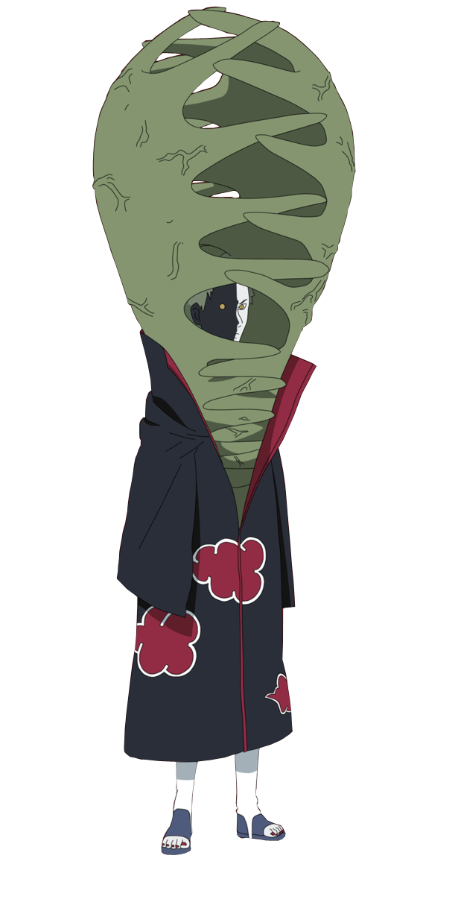

-
Yahiko


The Akatsuki's goal is world peace through the power of the nine Tailed Beasts
-
Nagato
Nagato primarily known under the alias of Pain is the recognized leader of the Akatsuki
-
Konan

Konan acts as the "angel" to his "god", communicating his will to Ame's villagers
-
Itachi
Itachi later became an international criminal after murdering his entire clan
-
Kisame

Kisame Hoshigaki is a former ninja of Kirigakure and partnered to Itachi Uchiha
-
Deidara
Deidara is a former ninja of Iwagakure, having left the village after bombing it
-
Sasori

Sasori primarily known as a former ninja of Sunagakure and partner of Deidara
-
Kakuzu
Kakuzu is the partner of Hidan and a former ninja of Takigakure
-
Hidan
Hidan is the immortal, foul-mouthed, and sadomasochistic partner of Kakuzu
-
Zetsu

Zetsu is the only member of the Akatsuki without a bespoke partner
-
Tobi
Obito Uchiha also known under his alias Tobi is the true leader of the Akatsuki